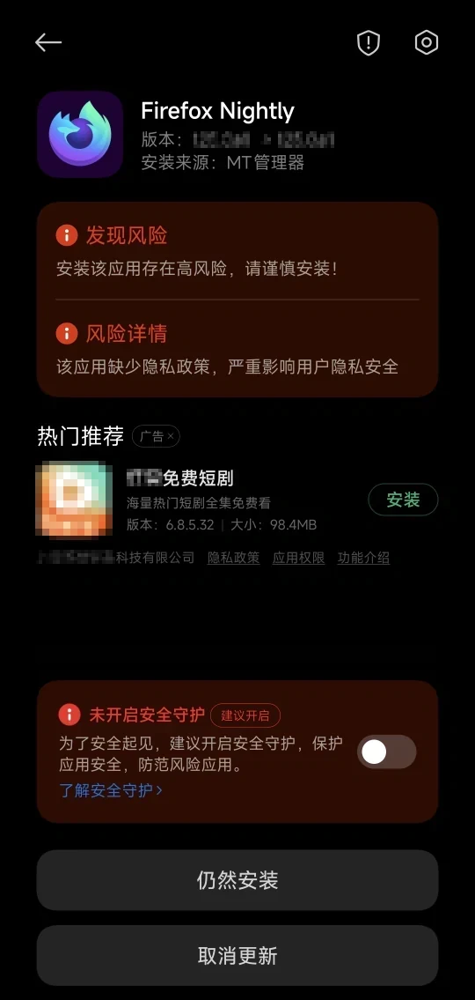
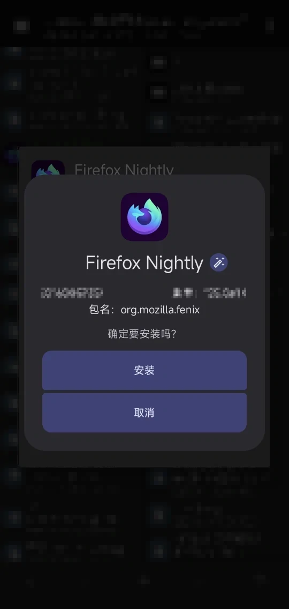

将 InstallerX 设为默认安装器


小米的安装器用起来真的是一言难尽。是时候换用更简洁美观的 InstallerX 了！
无需 root，断网 / 重启后仍能存活。
https://github.com/RikkaApps/Shizuku
https://github.com/iamr0s/Dhizuku
https://github.com/iamr0s/InstallerX
https://github.com/aistra0528/Hail
https://sumiyo.link/src/download/20250825.apps.zip
托管在咱的网站上，下载速度可能会有点慢 ...
Shizuku
可选用 root、无线调试（Android 11+）、ADB 激活（需要连接电脑），方法请参考 B 站上的教程。临时使用，可以考虑直接用无线调试激活 Shizuku。
长期使用的话，个人比较推荐 LADB（Android 11+），可以按照这个视频操作：
https://www.bilibili.com/video/BV15sZoYKEMg/
Dhizuku
Shizuku 激活不稳定，断 wifi 会导致无线调试激活失效，重启会导致 ADB 激活失效，激活期间还必须打开 USB 调试、无线调试 中的一个。这就是咱为什么不直接用 Shizuku 授权 InstallerX 的原因。与 Shizuku 不同，Dhizuku 利用了 DeviceOwner。简单来说，就是把一个极高权限的 "设备所有者" 设为手机自己（准确来说是 Dhizuku），然后让手机自己管理自己。一次激活，长期有效（可以完全关闭 USB 调试、无线调试等危险选项）。
激活 Dhizuku 的方法请参考 B 站上的教程。激活 Dhizuku 前，需要用 Shizuku 授权 Dhizuku、Accounts（可选，这是用来显示当前用户全部登录信息的）、应用冻结软件（可选，小黑屋、冰箱、雹 三选一，推荐用雹，后期可以直接用 Dhizuku 授权）。若激活 Dhizuku 时报错，请确保完全退出 / 冻结手机上的账号。若仍报错，试试重启一下手机。
InstallerX
配置页，授权器选择 Dhizuku，保存配置。在设置页，选择之前保存的配置，清除锁定默认安装器 后再 锁定为默认安装器 即可。现在绝大多数 app 都会将 InstallerX 作为安装器啦。不同设备效果不同。测试了 InstallerX 正式版 1.2 ~ 1.7 后，发现只有这个 "预览版" 在咱的手机上能正常工作。
FAQ
-
为什么严格按教程操作都还是失败了？
-
使用这些程序会有什么安全隐患吗？
-
为啥不用安卓的原生安装器呢？
-
为什么我的锁屏 / 下拉菜单上会有 "此设备归贵公司所有" 的提示呢？
-
操作完成！之前的更改可以动嘛？
-
Shizuku / Dhizuku 哪一个权限更大呢？
-
如果关闭了 Shizuku / Dhizuku，先前被冻的应用会解冻吗？
-
为什么有时 InstallerX 安装应用会报错？